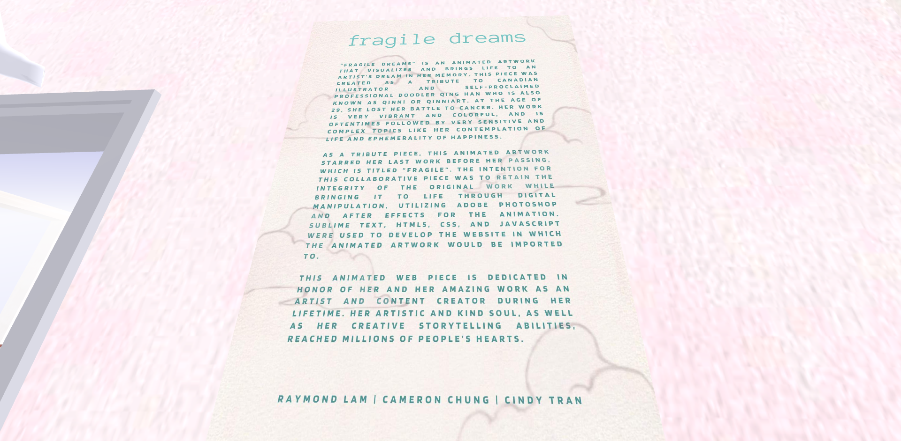

CADRE MENTORSHIP FALL20' SHOWCASE


"Fragile Dreams" is a digital installation in a virtual art gallery (New Art City) made within the Cadre Mentorship Program. With the help of Mentor Raymond Lam and Partner Cindy Tran, we were able to create a tribute piece for the Late Qing Han known as QuinniArt on Instagram. Her work inspired hundreds of thousands of people around the world. My mentorship pairing wanted to give this piece a new platform to further spread her love of art. Preserving her original design, we created an interactive web page to experience the full scope of scenses with Quinni's work. Below are the accessable works to the interactive website as well as the New Art City mentorship gallery for an immersive 3D experience.
"LITTLE LIGHTS"
"Little Lights", 2021, p5.js
"Little Lights" is an interactive javascript activity that shows different moving components as the user holds down the left mouse click and drags it across the screen. Further refining the skills I learned in classes such as ART 74: Introduction into Digital Media Art, this piece is for everyone to play no matter the demographic. Play around with it yourself; see the different changes in colors and shapes from all different sides of the square!
"FRUITY FRIENDS"


"Fruity Friends", 2019, Procreate